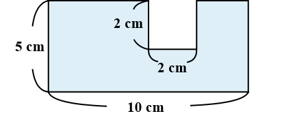
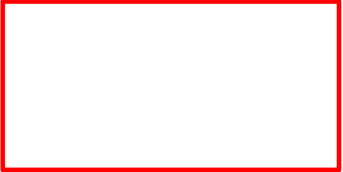
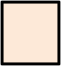

−
＝
Panjang × Lebar
5 × 10
−
Sisi × Sisi
2 × 2
＝
＝
Jadi, luasnya adalah 46 cm2.
50 − 4
46
Saat menghitung luas bangun datar kompleks, bayangkan bentuk tersebut sebagai bentuk yang sudah kamu kenal.